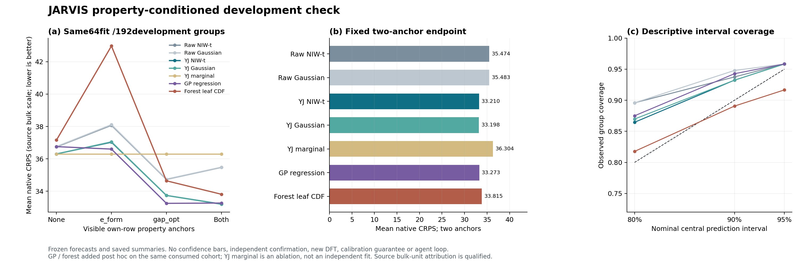

真实材料概率补齐：从模型准入到强基线检验
原单位概率补齐与强基线复核｜完整失败链保留｜自催化反馈仍待实证
这份报告不改写已封存的水凝胶曲线续接/MLST 研究，也不将 JARVIS 计算性质称为水凝胶测量。当前是面向“真实反馈学习关系、修复并扩展材料资料”的概率参考准入工作，尚不是已经成立的顶会新算法或完整自催化智能体。
1. 这次实际回答了什么问题
已知某个材料的 e_form（形成能）、gap_opt（源 op_gap）中的零项、一项或两项，能否更好地预测同一材料尚未揭示的 bulk modulus（源 kv）分布？训练资料为 64 个完整 formula 组代表行，诊断为另 192 个整组代表行；每个诊断目标必须在全部预测 law 冻结以后才由独立评分入口读取。
这是一项 性质条件补齐任务，并没有利用配方/结构特征建模，也没有测试任意几十性质、任意缺失模式或所有材料类别的泛化。化学式、jid、mpid 等身份信息用于分组与泄漏排除，不等于已经进行了化学式条件学习。当前结果不能替代用户最初提出的高维水凝胶/聚合物稀疏矩阵任务的独立材料证据。
| 项目 | 本轮约束 |
|---|---|
| 来源 | JARVIS 的公开计算性质快照；原始 gzip、元数据、许可、字段追溯均以已冻结 SHA 绑定。 |
| 原单位 | e_form 源单位 eV/atom、gap_opt 源单位 eV；bulk 的 GPa 归属来自官方字段资料，但 kv 的具体聚合含义没有被重新物理推导，报告保留限定。CRPS/区间宽度始终在这一源 bulk 数值尺度比较。 |
| 分组 | 先按 jid/mpid/规范化 formula 形成保守连通组；同组所有已知兄弟结构保持同一角色，选取一个代表行。旧40个 pilot 组完全排除。 |
| 两阶段关系 | 第一阶段256组与第二阶段256组互斥；第二阶段的表示假说形成于第一阶段诊断之后。因此第一阶段与第二阶段绝不是同模型的两次独立确认。 |
| 追加基线 | GP/森林只复用第二阶段已消费的64训练＋192诊断；新增材料组和新标签均为0，属于事后加强对照。 |
| 遮挡机制 | 先筛原始三量完整者再人工遮挡。原生缺失没有真值，完整案例选择可能有偏；这里没有识别真实 MNAR。 |
| 目标隔离 | 训练程序见训练64×3和诊断192×2代理量；可信提取器物理解析完整公开gzip后丢弃未授权值，并非密码学盲测。评分目标不进入当前拟合。 |
| 费用 | 未来契约按首次揭示原生cell去重计费，同包panel不能重复计数。当前只做静态补齐，尚未执行付费动作或证明实际实验节约。 |
| 实际阶段 | 训练组 | 诊断组 | 实际拟合数 | 预测 law 坐标 | 状态 |
|---|---|---|---|---|---|
| 第一阶段：原坐标联合 NIW | 64 | 192 | 1 | 2304 | NO_GO：PIT 描述门未通过 |
| 第二阶段：固定 YJ＋原坐标对照 | 64 | 192 | 2 | 3840 | 原定四门通过，仅准入后续反馈设计 |
| 第二阶段追加 GP＋森林 | 复用第二阶段64 | 复用第二阶段192 | 6 | 1536 | 通过本次有限竞争性检查 |
| 合计（按原 formula 组去重） | 128 | 384 | 9 | 7680 | 512组开发资料；0组独立确认 |
一条材料行在不同方法/掩码下对应多条 law，不增加材料样本量。第一阶段目标边际和第二阶段目标边际是消融 law，不是额外拟合。3,840 坐标中完全相同的 law＋outcome 只缓存一次评分；这同样不是新测量。
2. 为什么保留完整关系，而不强迫整张表低秩
当前参考采用完整三变量均值与协方差的 Normal–Inverse-Wishart（NIW）后验，解析整合后得到多元 Student-t。它保留所有三变量相关关系与完整残差，不将每条材料的未知性质硬压成一个确定低维向量。当前样本数、均值和 scatter 是经典充分统计，不宣称新型无损编码。
Σ ~ IW(ν₀, Ψ₀), μ | Σ ~ N(μ₀, Σ / κ₀) κₙ = κ₀+n, νₙ = ν₀+n μₙ = (κ₀ μ₀ + n x̄) / κₙ Ψₙ = Ψ₀+S+(κ₀n/κₙ)(x̄−μ₀)(x̄−μ₀)ᵀ x_new | D ~ t(df=νₙ−p+1, μₙ, [(κₙ+1)/(κₙ(νₙ−p+1))] Ψₙ) 当前 p=3, n=64, μ₀=0, κ₀=1, ν₀=7, Ψ₀=3I；预测自由度为69。 以上 t 参数为 scale matrix；其协方差需乘 df/(df−2)，两者不能混用。
所有标准化均只由 64 个训练组确定，因此原生尺度上的先验实际依赖这一经验参考，不是完全独立于训练资料的固定物理先验。对于单条新行，观察 k 个锚点后使用精确条件 t，自由度相应变为 69+k；不能把大量部分观测行简单声称为仍可按原 NIW 共轭式更新。
具体训练、条件分布、数值边界、源码接口详见 完整算法与代码中文讲解；本报告不替代代码与实际计划的逐字绑定。
3. 固定全实轴 YJ 表示解决了什么，没解决什么
第一阶段的失败提示考察材料性质偏斜和原单位概率尾部。第二阶段在任何新组标签读取前，把所有性质的 Yeo–Johnson 参数固定为 λ=1/2，不搜索 λ、先验、seed 或多套转换。先以训练样本标准差 s₀ 缩放 v=x/s₀，实施下式，再以训练变换量的均值和标准差标准化进入同一 NIW 模型：
T(v) = 2(√(1+v)−1) (v ≥ 0)
−[(1−v)^(3/2)−1]/(3/2) (v < 0)
g(u)=T⁻¹(u) = u+u²/4 (u ≥ 0)
1−(1−3u/2)^(2/3) (u < 0)
x = s₀ g(u)
CRPS(F,y) = ∫[F(x)−1(x≥y)]² dx
= E|X−y|−½ E|X−X′|。
它可以处理负值与零，避免把负 bulk 简单删除或用普通 log 截断。固定变换不会消除 gap=0 的点质量，因此它没有解决混合离散/连续联合分布的问题。t 分布经这一逆变换后，原生一阶绝对矩需 df>2、二阶矩需 df>4；当前自由度满足。直接给有限自由度 t 套指数增长逆变换可能产生不存在的原生 CRPS 矩，因此不能随意把它换为 log/asinh。
逆变换的 latent location 是原生中位数，不是原生均值；报告所有 RMSE 均明确对应“预测中位数”。YJ 同矩 Gaussian 指潜尺度同矩、再运输到原单位的分布，不是原生同矩 Gaussian。所有模型都在原单位的 CRPS、PIT 和区间上比较，绝不以潜尺度误差冒充材料误差。
4. 第一阶段失败完整保留
原坐标 NIW 双锚点 CRPS 为 35.545069（精确结果见下表）；双锚点比本模型无锚点低 3.90%，但连续 PIT ECDF 最大偏差 0.166992 超过原定 0.15。因此原始决定保持 NO_GO，停止这一原坐标候选的全预算 campaign，不在同一组救分。
| 第一阶段 law（两个锚点） | CRPS（源尺度） | PIT D | 90%区间覆盖 |
|---|---|---|---|
| niw_joint_t | 35.545069 | 0.166992 | 92.71% |
| gaussian_momentmatched | 35.524606 | 0.164868 | 92.71% |
| independent_target_marginal | 36.986947 | 0.155864 | 94.27% |
第二阶段另用未消费的 256 个整组，而不是对第一阶段失败结果换参数重算。新 cohort 可以检验固定的新假说，但新假说源自旧开发诊断，仍属于连续方法开发，不能称严格独立确认。
5. 同一第二阶段 cohort 的全部匹配比较
| 方法 | 无锚点 CRPS | 仅 e_form | 仅 gap_opt | 两个锚点 | 双锚点90%覆盖 | 双锚点连续 PIT D |
|---|---|---|---|---|---|---|
| 原坐标 NIW–t | 36.735491 | 38.072284 | 34.732171 | 35.473527 | 93.75% | 0.114412 |
| 原坐标同矩 Gaussian | 36.755860 | 38.107266 | 34.744656 | 35.483365 | 94.79% | 0.118304 |
| 固定 YJ–NIW–t | 36.303514 | 37.027299 | 33.742184 | 33.209613 | 93.23% | 0.084165 |
| YJ 潜尺度同矩 Gaussian | 36.302351 | 37.049574 | 33.741358 | 33.198413 | 93.23% | 0.087341 |
| YJ 目标边际消融 | 36.303514 | 36.303514 | 36.303514 | 36.303514 | 92.71% | 0.108839 |
| 固定配方 GP 回归 | 36.755492 | 36.603465 | 33.253832 | 33.272810 | 94.27% | 0.084476 |
| 森林全原始叶条件经验 CDF | 37.161149 | 42.967109 | 34.646018 | 33.815383 | 89.06% | — |
192组等权均值，越低越好；每一列给各方法完全相同的信息。森林是含原子的经验 CDF，连续 PIT D 留空；不能把 midpoint PIT 当作连续 Uniform(0,1) 再进行同一个准入判定。边际消融重复是设计使然，不是另一组训练证据。

候选两个锚点 CRPS = 33.209613123，无锚点 = 36.303513892；原坐标联合 t = 35.473526715，YJ 潜尺度同矩 Gaussian = 33.198412763。这说明固定表示和条件性质信息在这一开发任务中有用；它没有证明“重尾后验必胜”，更没有证明新的智能体已获得优势。
仅 e_form 的候选结果比无锚点差，但它与 gap_opt 合用优于仅 gap_opt。这是值得后续检验的条件互补现象，不能据此直接认定某种购买顺序最优或获得了自催化收益：本轮从未运行序贯购买策略，静态同一行条件化也不等于跨材料关系学习。
第二阶段原坐标联合 t 的 PIT D 同样低于 0.15。因此不能将第一阶段 PIT 失败、第二阶段 PIT 通过直接归因于 YJ；两个阶段的 cohort 不同。真正可比的变换收益来自本表第二阶段的匹配原坐标对照。
6. 新增非线性强参考的判定与边界
Gaussian process 与森林是在候选结果已知后追加，但其配方在首次产生新基线输出前冻结，只有三个非空掩码各拟合一次，不调参、不挑 seed、不按结果改变数据分组。它们用同样 64 个训练组、同样可见性质、同样 192 个开发目标，候选没有重拟合或重评分。
| 追加对照（双锚点） | CRPS（源尺度） | 候选 / 此对照 |
|---|---|---|
| 固定配方 GP 回归 | 33.272810014 | 0.998100645 |
| 森林全原始叶条件经验 CDF | 33.815383348 | 0.982085957 |
对照采用原生目标分布：GP 保存均值和标准差，森林保存基于所有 64 个原始训练行的条件叶质量，而非用随机生成标签打分。森林是明确的 QRF 启发变体；没有运行官方 QRF 软件包。树训练的 max_features 为整数1，表示每个节点只抽一个特征，不是 float 1.0 的全特征比例。
这两类参考适用于当前严格性质条件任务。没有利用化学组成/结构的大模型、强描述符回归器等尚未运行，不能据这两项代表“所有材料强基线”。未来若改为配方条件任务，需要重新冻结相应强描述符/结构参考，不能把当前结果扩大适用域。
7. 原定门与事后参考分开保留
| 阶段 | 原定描述性准入条件 | 实际判定 |
|---|---|---|
| 第一阶段 | 双锚点 / 无锚点 CRPS ≤0.98 | 通过 |
| 第一阶段 | 双锚点 / 同矩 Gaussian CRPS ≤1.02 | 通过 |
| 第一阶段 | 90% 区间覆盖率 ≥0.80 | 通过 |
| 第一阶段 | 连续 PIT ECDF D ≤0.15 | 未通过 |
| 第二阶段 | 双锚点 / 本模型无锚点 CRPS ≤0.98 | 通过 |
| 第二阶段 | 双锚点 / 三类同信息解析参考最优 CRPS ≤1.02 | 通过 |
| 第二阶段 | 90% 区间覆盖率 ≥0.80 | 通过 |
| 第二阶段 | 连续 PIT ECDF D ≤0.15 | 通过 |
四项准入门只是事前规定的开发适配筛查，不是显著性检验、精确 KS 测试或材料校准定理。90% 区间覆盖高于 90% 也可能意味着区间偏宽；较小 PIT 偏差不证明每个材料子群都可靠。新增强参考检查的失败即使发生，也不会抹去第二阶段原定门曾通过的事实；它会收缩“达到强学习基线”的主张并改变下一投入方向。
8. 数值结果怎样被独立复核
独立脚本不调用主实现的拟合/预测/评分，不通过重新拟合得到相同结果来冒充独立算法核查。先验证经典 NIW、条件 t、YJ 逆变换、原生 CRPS 的数学路径，再从冻结 law 或完整状态直接重建对应量。评分预测冻结和评分权限由分开的精确计划 SHA 绑定。
| 证据层 | 实际覆盖 | 适用边界 |
|---|---|---|
| 第一阶段独立复核 | 全部2,304条 law 参数、PIT/区间/聚合量；另有24个固定 CDF 积分点与闭式评分交叉核查。 | 不能把24个积分点写成2,304个独立积分。 |
| 第二阶段完整原单位积分 | 全部3,840坐标；3,060个唯一 law＋outcome 直接 native-x CDF 积分；最大 CRPS 差 5.99e-11。 | 缓存780个完全相同坐标，不增加N。独立脚本使用 forward T 的 native CDF，不复用主实现的 inverse-Jacobian积分。 |
| 新增状态独立核查 | 1,536条 law；GP 核矩阵/factor/dual 算术；森林 float32 路径和 Fraction 质量。 | 不重新运行优化器或树训练。GP backward residual 小不等于参数 forward 误差有严格保证；预定容差与条件上界留存。 |
| 新增分布评分核查 | 全部新增 law 的评分、区间、PIT、均值汇总和候选相对值由独立脚本核查。 | 森林使用离散概率质量的能量式对照，不能沿用连续 PIT uniformity 门。 |
| 复现层 | 源码、输入、角色、实际UTC、freeze、审批、失败收据与独立入口都保留；默认只读核验。 | 重放不是新材料确认；审计计算时间也不是与主程序公平对齐的算法加速实验证据。 |
本报告只是聚合并呈现既有冻结统计，不增加一次拟合、一次目标评分或一次新科学实验。精确原收据与 SHA 在第13节列出。若收据状态并非 PASS，生成脚本会停止，不能输出预写成功的最终报告。
9. 创新怎样定义，怎样避免夸大雷同
形成材料论文不要求每个公式和模型都从未出现过。合理的贡献可以是：对一个未被充分解决的材料难点建立清楚任务和合法信息边界，将已有方法适配为有效系统，并给出新的材料证据。这里也不要求对所有领域都有效。但仅把 Gaussian/YJ/Bayes 更新改名为“自催化”“场”或“修网”，并没有增加方法或材料贡献。
| 部分 | 已有先例/本次状态 | 可成立的限定贡献方向 |
|---|---|---|
| NIW、条件 t 与同矩 Gaussian | 经典概率建模，当前已实现且核对；没有原创公式主张。 | 作为保留完整关系与残差的透明参考和后验学习起点，而非单独新算法。 |
| YJ λ=1/2 与原单位矩/评分 | Yeo–Johnson 是既有机制；固定变换、全实轴与原生矩审查均已落实。 | 材料字段身份、负值/零、原单位有效评分的严谨适配可作为系统组成，但单靠它尚不足顶会贡献。 |
| 未知相关性学习＋序贯选择 | Qu等2015已有直接先例；仅以“学习关系再获取信息”为新原则不成立。 | 必须证明材料旧行修复、新行扩展和真实目标返回间有可检测额外价值，且胜过同信息/同动作的强 planner。 |
| 保留完整关系、压缩终端读出 | Wasserstein mixture reduction/决策近似已有相关工作；本轮是数学候选，没有实际材料实现。 | 若定位到真实瓶颈，可研究带原单位读出误差控制的实现；先与cached/CDF O(HM)强读出公平比，不只对慢H²循环。 |
| Eigen自催化/超循环 | 用户确认的启发；Bayes/replicator联系是已知数学解释，未运行ODE或超循环agent。 | 要求实际新观测促使关系后验变化、改善其他材料预测，且这种回馈能提升统一预算下的后续行动价值。 |
已检索内容覆盖直接近邻的选段、原论文或官方来源，不是“全网无雷同”证明，更没有将用户曾要求的各100篇全部精读冒充已完成。可核的阅读范围分别见 直接近邻阅读账本、NIW/t/CRPS阅读账本、GP/森林来源账本。
恢复后的有界近邻更新另见 反馈机制近邻补充：workshop概念工作按其真实类别引用，不写成主会验证。已有自反馈/闭环名称相似本身不否定材料适配贡献，但本研究仍须明确额外任务和可证伪增量。
10. 低维读出压缩的数学候选：有依据，也有明确边界
保留全部关系假设 θₕ、完整观测似然 qₕ(z) 和其真实后验权重 wₕ(z)，只把终端目标预测的读出近似为 K 个 prototype。不能用 prototype likelihood 替换原 θ 的关系学习，也不能把不同目标独立压缩后自动称为一致的联合生成器。
完整读出 F_z = Σₕ wₕ(z) N(cₕ+bₕᵀz, sₕ²) 近似读出 G_z = Σg [Σₕ:g(h)=g wₕ(z)] N(cg+bgᵀz, sg²) W₁(F_z,G_z) ≤ Σₕ wₕ(z) E|Δcₕ+Δbₕᵀz+Δsₕ ε| 内部 Bayes-CRPS 风险差 ≤ W₁(F,G) 固定实际 y 的 CRPS 差 ≤ 2 W₁(F,G) YJ inverse 并非全局 Lipschitz；原单位需要共同耦合的L²量： E|s₀g(U)−s₀g(V)| ≤ s₀[1+½||U||₂+½||V||₂] ||U−V||₂。
prototype 必须在未来观测 z 之前固定；上式没有为未知模型失配、有限 posterior particle 误差、数值积分误差或多步闭环最优性提供保证。观测 CRPS 的常数1有明确反例，不能错用；非线性变换也不能直接把 latent W₁ 乘一个固定小系数当作原单位误差。
这一方向没有在本轮材料数据实现、计时或验证。本轮材料收益不能用它解释。详细推导见 完整读出耦合证明与反例 和 YJ原单位补充。
11. 下一步围绕一个可证伪的科学问题收敛
核心问题：在同一初始材料资料、同一原生 cell/panel 费用与同一全部合法动作下，真实新目标反馈引起的关系后验更新，是否能改善后续其他材料的补齐/扩展，且这种改善超过仅做当前行条件化的强参考？
- 先固定概率骨干与局限。可以把当前联合参考保留为下一反馈任务的候选，但不能称所有材料或所有强基线已被超过。 若使用新骨干，应在新任务协议中说明选择根据，不在第二阶段192组上追加超参搜索。目标不能仅是把一个经验阈值调过去。
- 明确真实关系更新路径。一个新观测只在首次返回时进入完整条件似然并计费。多个锚点与 target 都可能携带关系信息，不能给某模块免费目标，也不能把模型生成值当作返回测量。
- 用未消费的整组建立新任务。预先冻结 train/warm、合法查询池和不可被planner访问的audit终点；新来源不自动独立，原组/结构兄弟必须去重。第一阶段、第二阶段及旧40组不作为新确认。
- 公平对照要能直接反驳故事。完整联合一步/两步 value-of-information、仅修复、仅扩展、固定交替、停止以及直接 target 验证都保留相同后验/动作/成本。关闭跨材料反馈的控制保持当前行条件化不变，用于定位收益来自何处。
- 先定位计算瓶颈再压缩。少量性质/少量关系假设下 exact 读出可能已经足够快；应把 posterior 更新、未来观测积分、读出和 fallback 全计时。没有实际收益就不引入新网络或复杂agent。
- 按结果收缩主张。若完整 planner 同样好或更好，保留经典任务适配结论。若某候选失败，记录失败并停止该候选，不给同一评价组换参、重切或改主终点；新的问题必须有独立可审协议。
这里还存在可由公共资料、数学和程序推进的工作，尚不能将核心方法未定推给作者湿实验。真正新批次水凝胶/聚合物确认、实际实验节约等仍需对应资料/实验后才能增加主张；当前不要求为追求顶会口号把这些写成已完成。
12. 当前缺口与允许的论文表述
| 可写 | 暂不可写 |
|---|---|
| 两个不重叠开发cohort；固定表示的第二阶段获得匹配条件补齐收益。 | 独立批次或领域外泛化已被确认。 |
| 通过本次有限竞争性检查，并保留GP/森林完整阴性或阳性结果。 | 所有强材料基线、配方/结构大模型或SOTA均已被超过。 |
| 全原生尺度评分、完整预测冻结、独立数值路径核查。 | 数值正确就保证概率校准、适配原生缺失或实际材料可靠。 |
| 低维终端读出的耦合界及完整关系保留原则已形成数学候选。 | 新压缩算法已经在材料或agent闭环产生加速与收益。 |
| Eigen/修网/愈合是信息闭环的研究启发。 | 现有静态NIW或自采样已经实现超循环和知识自生长。 |
| 资源可完整复核，旧失败与原MLST冻结不变。 | 本轮已经达到顶会投稿证据门、保证录用或保证任何分区。 |
13. 最短评审路径与原始证据
先看第4–7节和三份独立原收据；再读算法/代码说明与实际协议；最后按需读取完整 per-case 结果。纯评审无需重跑拟合。以下相对链接在保留整个资源目录层级时可离线打开。
主模型详细算法讲解 · 新增强基线算法讲解 · 28行匹配结果汇总CSV · 机器可读报告汇总
| 角色 | 实际文件 | SHA256 |
|---|---|---|
| phase1 | RESULTS.json | bd290374748c7b22735a87955e9edd4cdb3112db8706a88bfaaec3d75e3e6ef9 |
| phase1_forecast_audit | INDEPENDENT_SAVED_NIW_FORECAST_AUDIT.json | f07eb5979d5e8ceb0cf7400d99bed3b3742d10744bc7c966e4b4d772ac18cbd6 |
| phase1_score_audit | INDEPENDENT_SAVED_NIW_SCORE_AUDIT.json | 3636bbc7790a84bca6ba49e23b3389b536184fa3c96b202fb02aee2a2458d506 |
| phase2 | RESULTS.json | 4bf07550b9b4840967b6cca13d4a81c190616e7a4bdb47813126793bde2b5711 |
| baseline_plan | EXECUTION_PLAN_REGISTERED.json | 0543eae0e4ac5f1f89fc3a36256770cb2b160f51bb3b2ff657a8b2cdbb46b754 |
| baseline_freeze | FORECAST_FREEZE.json | e113ea9443af88aa858d85fd6579cd6f85b6458c02aa69c071c4140ab4eeb697 |
| baseline | RESULTS.json | bf93dc63890a326a07240ce4d9acec5664cb42002b79b6e25c7a0cccd9ac5165 |
| native_score_audit | INDEPENDENT_PHASE2_ALL_NATIVE_SCORE_AUDIT.json | 5c09b7b672d88921ae461d2d0bcd2afad79200170e09794ffae1090e039cba7b |
| baseline_forecast_audit | INDEPENDENT_FIXED_BASELINE_SNAPSHOT_AUDIT.json | cdeed4b33594fd20ed267e658a46ca681aa125349734a99f086d52d5e8b86470 |
| baseline_score_audit | INDEPENDENT_FIXED_BASELINE_SCORE_AUDIT.json | 6737a2e236437f4bd9d104a12e3c4ae9c8deffe72c40f0fd9ba92f34a5bdcd2a |
完整模型状态包含训练原生性质，只在本地完整资源包保留；公开 Git 子集若排除数据/状态，必须使用自身独立 manifest 与路径说明，不能把本地完整包 manifest 直接搬过去。报告默认不访问外部 CDN，不复制原论文全文。
首轮阶段2启动曾因root审批scope字符串不符被程序在读响应/拟合前拒绝；原失败文件保留，后续只更正审批作用域，没有改模型或科学计划。V2审批的辅助Asia/Shanghai字段沿用了旧值，已用外部时间更正收据说明，原绑定文件没有回写。中断后沿冻结baseline状态继续审计/评分，没有重拟合；行政修复不计作新科学进展。
14. 采用的关键原始/官方来源
- Murphy, 2007：Gaussian/NIW 作者稿：选读§9；Ding, conditional multivariate t：条件分布推导选读。
- SciPy：Yeo–Johnson 公式与原论文入口。原Yeo–Johnson论文阅读范围以来源账本为准，不冒称全文学习。
- Meinshausen, 2006：Quantile Regression Forests：方法§2–3及式(4)–(6)选读；当前实现是明确变体，不是官方QRF代码重跑。
- scikit-learn 1.6：Gaussian process：运行库为1.6.1，不能把最新网站版本当作实际实验版本。
- Qu等, 2015：Sequential Selection with Unknown Correlation Structures：官方摘要/元数据；没有假称读取受限全文。
- Approximation-Aware Bayesian Optimization 与 Covariance matrix completion via auxiliary information：已读方法选段，说明效用感知近似和关系补全并非空白方向。